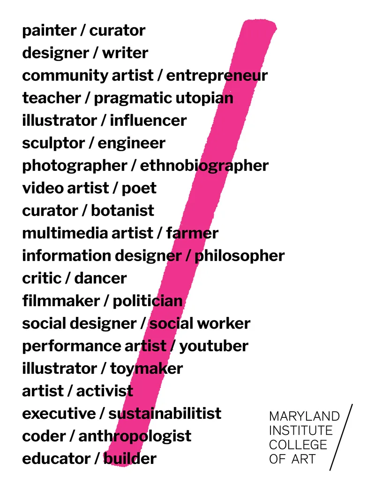
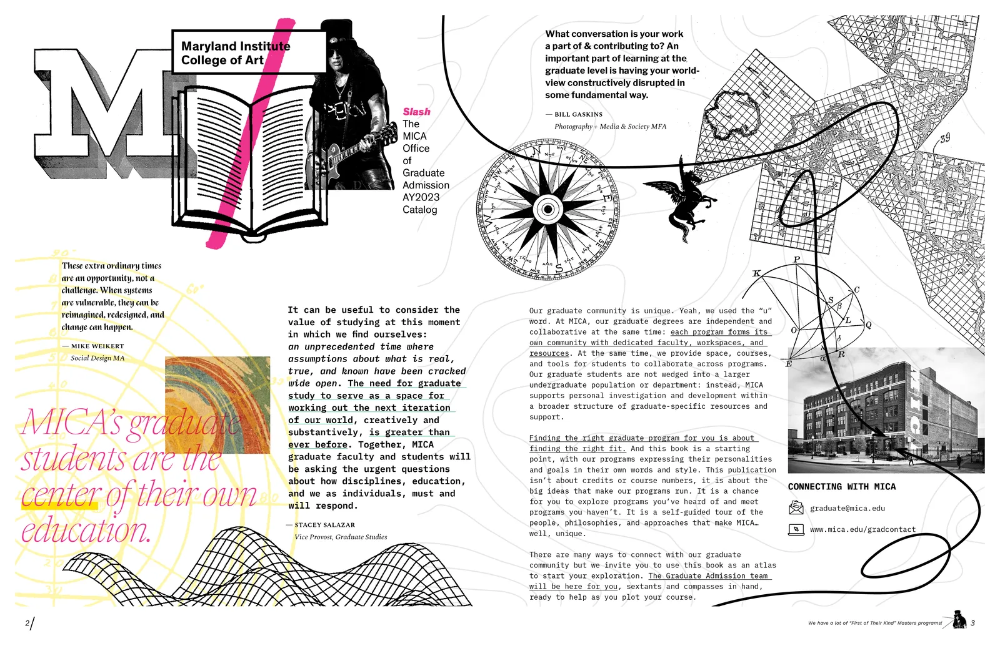
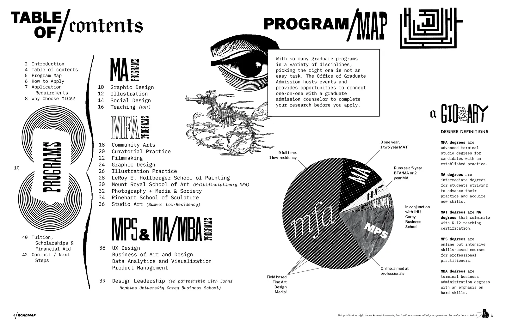
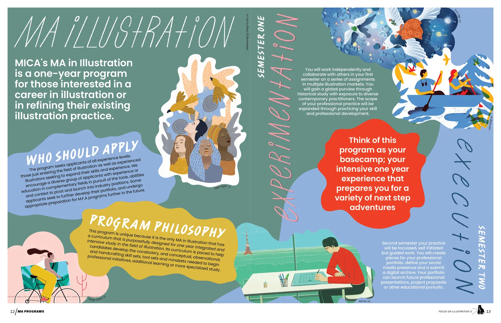
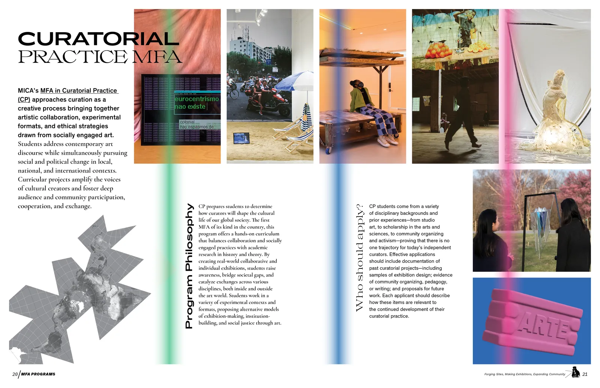
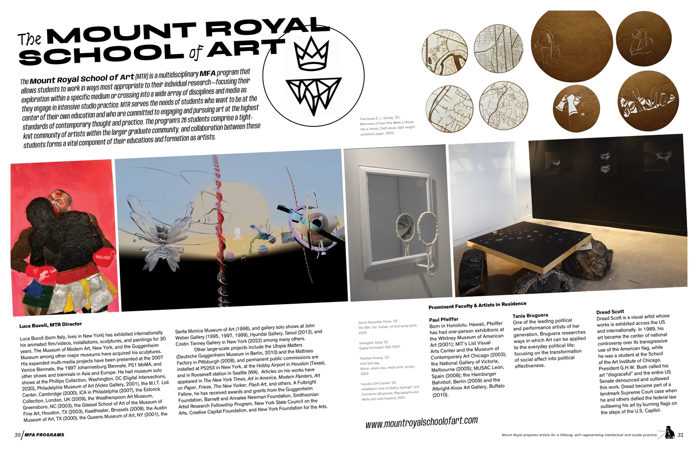
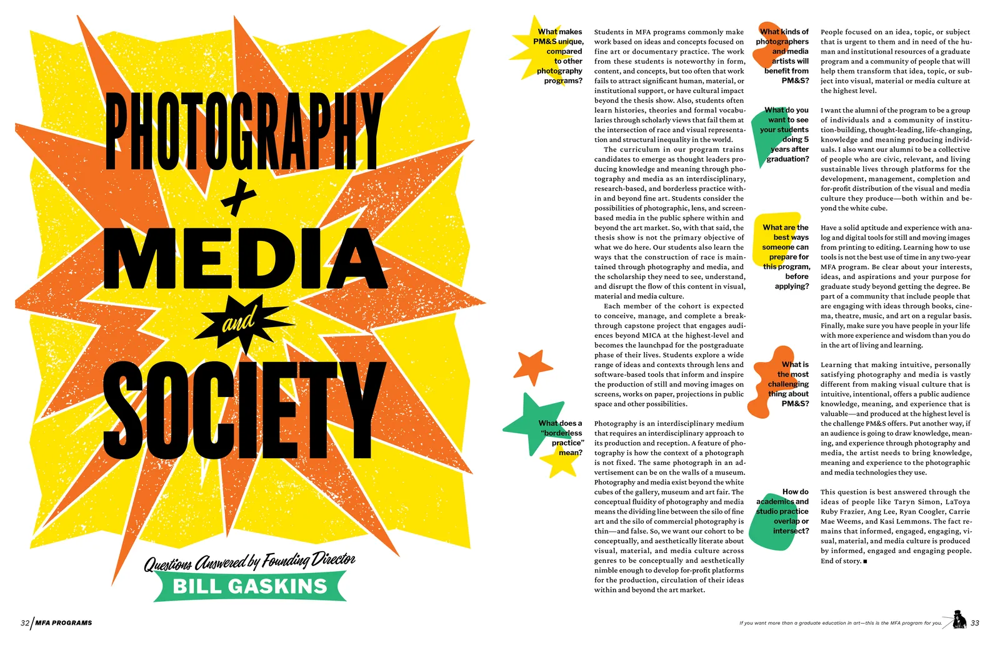
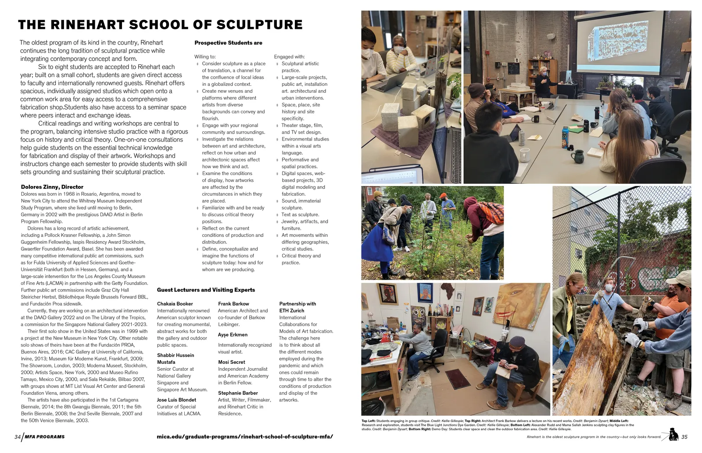
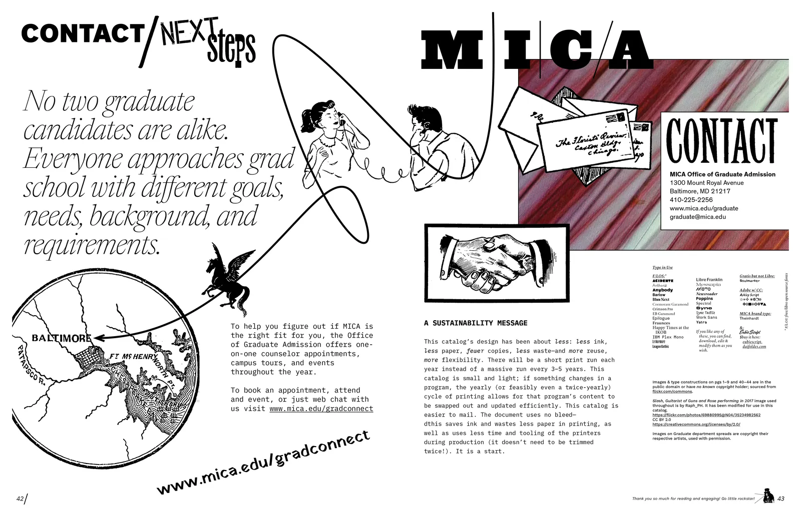

Two projects, running since 2022. MICA’s still using them — a handful of spreads are getting revised for 2026–27 without touching the rest of the book.
Two projects, two attempts at the same question for MICA’s graduate admissions. MICA’s graduate programs are a genuinely disparate group — unique disciplines with little overlap, beyond bringing together a remarkable, interdisciplinary group of artists and designers to make work on campus. How do admissions materials represent that without either flattening the differences or ballooning into a thick, generic catalog?
- The mailer
- A pandemic-era die-cut zine that unfolds into a poster, imposed to print on a single press sheet with one set of CMYK plates.
- Slash
- A full catalog that gives every program its own two-page spread instead of a shared, generic grid.
The mailer
Printed during the pandemic, the first piece used a simple die-cut folding zine that unfolds into a poster. Its size came directly from the press sheet at the printer, Schmidt’s Press in Baltimore — sized so that one cut down the middle of the sheet produced two full posters, each die-cut and folded down to something small and light enough to mail.
Front and back were also imposed onto a single set of plates: print one side, flip and rotate the whole stack, run it back through the press. One set of CMYK plates for the entire piece, no separate plates for front and back. Printing efficiently is designing for the welfare of all life just as much as the content and materials are. The imagery and type were all public domain or open-source, chosen to represent the variety of things across MICA’s grad programs generally, rather than any one of them specifically.


Slash
Slash replaced what MICA’s graduate admissions catalog used to be: a few hundred pages of photography, long-form program descriptions, and a full separate set of application instructions for every program. The mailer’s "applies to everyone" idea became the front and back matter of a full book instead — general MICA grad-school information, printed simple black-and-white, that doesn’t change program to program.
Every individual program then gets its own two-page spread in color: a visual flag, a semiotic signal for what that program is and how it thinks, instead of another few pages on a shared grid of student work. Flip through the book and the differences between programs should read clearly.
The spreads pull from a deliberate hodgepodge: historic and artistic references sit alongside specific Baltimore sources, aiming to convey MICA’s multidisciplinary, multifaceted character as a school rather than any single house style.
Sending a smaller, lighter catalog uses fewer resources than the old one — less paper and ink, and less wasted in shipping — even though the old catalog packed in more raw information. Our goal: a two-page spread built for meaning can do as much communicative work as pages of a generic photographic grid.
Slash was also designed so individual sections could be revised without touching the rest of the book: some programs evolve quickly, others stay put for years. That’s finally happening for the 2026–27 academic year — a handful of spreads getting revised without overhauling the whole document.








